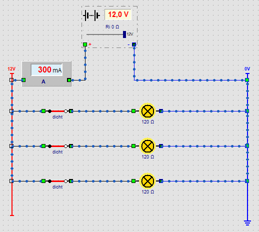

Parcours › Partir de l’énergie › Leçon 4 sur 5 · Niveau : Base
Dans une maison, chaque robinet n’a pas son propre tuyau jusqu’à la conduite d’eau de la rue. Il y a une conduite principale qui amène l’eau, et chaque robinet en prend une dérivation. L’eau usée part par une seule évacuation.
Dans la leçon 3, chaque circuit retournait à la source avec ses propres fils. Avec dix lampes, cela devient un enchevêtrement de fils. C’est pourquoi nous utilisons désormais des rails :
Ainsi chaque circuit a le même aspect : l’énergie entre à gauche et repart à droite.

Combien de courant l’appareil mesure-t-il avec 1, 2 et 3 lampes ? Pourquoi une lampe ne faiblit-elle pas quand on en ajoute une ? Qu’est-ce que cela signifie pour l’épaisseur de la conduite principale d’une maison ?
100, 200 et 300 mA : les courants des lampes s’additionnent dans l’alimentation. Chaque lampe est directement entre les rails et reçoit donc les 12 V complets ; c’est pourquoi elle reste aussi vive. Les lampes sont en parallèle. La conduite principale doit pouvoir porter le courant de tous les récepteurs ensemble : elle est plus épaisse que le fil vers une seule lampe. C’est aussi pourquoi elle contient un fusible.